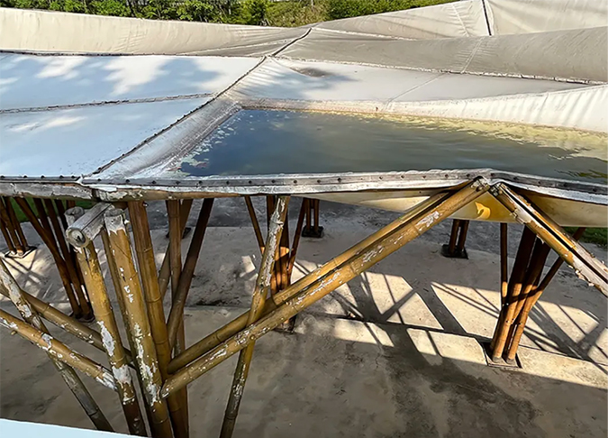
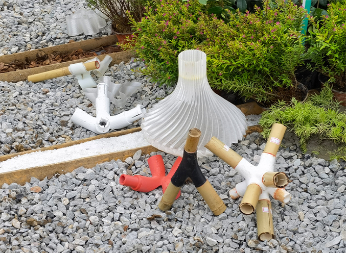

原竹建筑耐候性影响因素分析研究
通过对绩溪、安吉、丽水，广州、顺德、惠州、深圳7个地区的23个原竹建筑进行同角度建成时与现状对比、现状含水率测定，及设 计层面的分析，以及对包括中国、印度尼西亚、泰国等7个不同国家或地区的44个原竹建筑的案例分析，结合作者多个原竹建筑设计 实践及建成后评价的经验，总结出设计层面影响原竹建筑耐候性的主要因素，为原竹建筑耐候性设计提供参考。

关于平衡标准化生产和竹材利用的关系的探讨
当前竹材生产应用中整体利用率低于40%，竹材的非标准性与传统的连接方式往往让其被定义为非现代化的建造材料。如何提高原竹 利用率？如何平衡标准化生产和竹材利用的关系？ 按围径级差分段利用是一种可能， 通过3d打印节点实现分段的自由连接。简洁的 结构与契合的节点带来力与美的统一，未来的竹丛正在自由地生长。